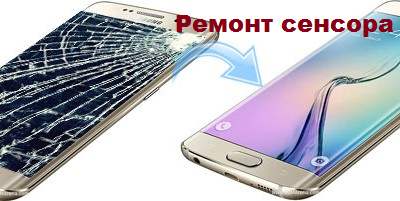
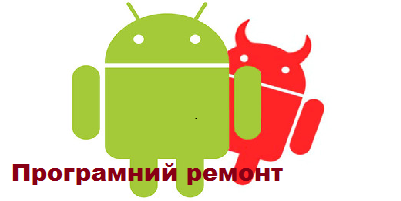
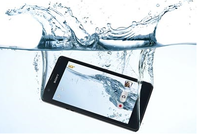

Компанія заснована 27 вересня 1998 року як приватна компанія, що займається розробкою,
розвитком і дизайном найпопулярнішого в інтернеті пошукового сервісу. Google підтримує і
розробляє низку інтернет-сервісів і продукції, отримуючи дохід передусім від реклами, завдяки
своїй програмі AdWords. Компанію заснували Ларрі Пейдж і Сергій Брін. Вперше як приватну компанію,
її було зареєстровано 4 вересня 1998 року, а 19 серпня 2004 року Google розпочав продаж своїх акцій
на фондовому ринку. Тоді Ларрі Пейдж, Сергій Брін та Ерік Шмідт домовилися про спільну співпрацю
протягом 20 років, до 2024 року. Проголошеною місією компанії від самого початку була «організація
світової інформації, забезпечення її доступності та користі для всіх», а неофіційне гасло компанії, придумане
інженером Google Полом Бакгейтом: «Не будь злим» (англ. Don't be evil). 2003 року компанія переїхала до
своєї нинішньої штаб-квартири в Маунтін-В'ю (штат Каліфорнія), де працюють близько 28 тис. робітників.
Google керує понад мільйоном серверів у центрах опрацювання даних (ЦОД) у всьому світі, опрацьовуючи
більше мільярда пошукових запитів і 24 петабайт користувацьких даних щодня. Швидкий ріст Google з моменту
його заснування призвів до виникнення великої кількості продукції, непов'язаної безпосередньо з головним продуктом
компанії — пошуковою системою. Google має такі онлайн-продукти як поштовий сервіс Gmail, соціальні інструменти
Google+ та Google Buzz. У компанії є також і десктопні продукти, такі як браузер Google Chrome, програма для роботи
з фото Picasa і програма обміну миттєвими повідомленнями Google Talk. Крім того Google веде розробку мобільної
операційної системи Android, яка використовується великою кількістю смартфонів, а також операційною системою
Google Chrome OS, яку вже тепер можна скачати на офіційному сайті Google.
За версією BrandZ, Google — найсильніший[5] бренд у світі, а за версією компанії Brand-Finance — найдорожчий
(44,3 млрд долл.) бренд світу у 2011 році.[6][7] Проте в 2015 і в 2016 році вартість бренду була другою після
бренду Apple.[8] 2011 року Google було визнано компанією з найкращою репутацією в США.[9][10]